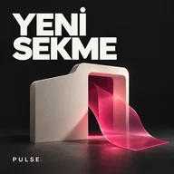
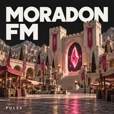

Bu kayıt 21.10.2026 tarihli sayıdır. Güncel yayın durumunu ve sesleri kullanmak için JavaScript’i etkinleştirin.

Teknoloji podcast’i
Yaşar ve Necdet
21.10.2026 · 21:34

Oyun podcast’i
21.10.2026 · 18:07
4:01
5:07